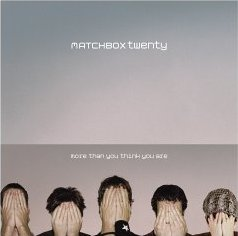
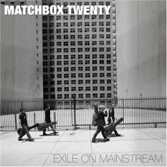
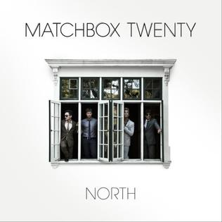

| Cover | Album | Track Listing |
|---|---|---|
|  | More Than You Think You Are (2002) |
1. "Feel" 2. "Disease" 3. "Bright Lights" 4. "Unwell" 5. "Cold" 6. "All I Need" 7. "Hand Me Down" 8. "Could I Be You?" 9. "Downfall" 10. "Soul" 11. "You're So Real" 12. "The Difference" 13. "So Sad, So Lonely (hidden track)" |
|  | Exile on Mainstream (2007) | Disc one 1. "How Far We've Come" 2. "I'll Believe You When" 3. "All Your Reasons" 4. "These Hard Times" 5. "If I Fall" 6. "Can't Let You Go" 7. "Come Dancing" (iTunes pre-order) Disc two 1. "Long Day" > 2. "Push" > 3. "3 A.M. > 4. "Real World" > 5. "Back 2 Good" > 6. "Bent" > 7. "If You're Gone" > 8. "Mad Season" > 9. "Disease" > 10. "Unwell" 11. "Bright Lights" |
|  | North (2012) | 1, "Parade" 2. "She's So Mean" 3. "Overjoyed" 4. "Put Your Hands Up" 5. "Our Song" 6. "I Will" 7. "English Town" 8. "How Long" 9. "Radio" 10. "The Way" 11. "Like Sugar" 12. "Sleeping at the Wheel" |